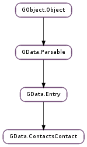

| Name | Type | Flags | Description |
|---|---|---|---|
| billing-information | str | r/w | Billing information for the contact. |
| birthday | GLib.Date | r/w | The contact’s birthday. |
| birthday-has-year | bool | r/w | Whether the contact’s birthday includes their year of birth. |
| deleted | bool | r | Whether the entry has been deleted. |
| directory-server | str | r/w | The name or address of an associated directory server. |
| edited | int | r | The last time the contact was edited. |
| file-as | str | r/w | The name to file the contact under for sorting purposes. |
| gender | str | r/w | The gender of the contact. |
| initials | str | r/w | The initials of the contact. |
| maiden-name | str | r/w | The maiden name of the contact. |
| mileage | str | r/w | A mileage associated with the contact. |
| name | GData.GDName | r/w | The contact’s name in a structured representation. |
| nickname | str | r/w | The contact’s chosen nickname. |
| occupation | str | r/w | The contact’s occupation. |
| photo-etag | str | r | The ETag of the contact’s photo. |
| priority | str | r/w | The contact’s importance. |
| sensitivity | str | r/w | The sensitivity of the contact’s data. |
| short-name | str | r/w | A short name for the contact. |
| subject | str | r/w | The subject of the contact. |
None
| Name | Type | Access |
|---|---|---|
| parent | GData.Entry | r |
Bases: GData.Entry
All the fields in the GData.ContactsContact structure are private and should never be accessed directly.
| Parameters: | id (str or None) – the contact’s ID, or None |
|---|---|
| Returns: | a new GData.ContactsContact ; unref with GObject.Object.unref () |
| Return type: | GData.ContactsContact |
Creates a new GData.ContactsContact with the given ID and default properties.
| Parameters: | calendar (GData.GContactCalendar) – a GData.GContactCalendar to add |
|---|
Adds a calendar to the contact’s list of calendars and increments its reference count.
Duplicate calendars will not be added to the list, though the same URI may appear in several GData.GContactCalendar s with different relation types or labels.
| Parameters: | email_address (GData.GDEmailAddress) – a GData.GDEmailAddress to add |
|---|
Adds an e-mail address to the contact’s list of e-mail addresses and increments its reference count.
Note that only one e-mail address per contact may be marked as “primary”. Insertion and update operations (with GData.ContactsService.insert_contact ()) will return an error if more than one e-mail address is marked as primary.
Duplicate e-mail addresses will not be added to the list.
| Parameters: | event (GData.GContactEvent) – a GData.GContactEvent to add |
|---|
Adds an event to the contact’s list of events and increments its reference count.
Duplicate events will be added to the list, and multiple events with the same event type can be added to a single contact. Though it may not make sense for some event types to be repeated, adding them is allowed.
| Parameters: | external_id (GData.GContactExternalID) – a GData.GContactExternalID to add |
|---|
Adds an external ID to the contact’s list of external IDs and increments its reference count.
Duplicate IDs will not be added to the list.
| Parameters: | href (str) – the group’s ID URI |
|---|
Adds the contact to the given group. href should be a URI.
| Parameters: | hobby (str) – a hobby to add |
|---|
Adds a hobby to the contact’s list of hobbies, copying it in the process.
Duplicate hobbies will not be added to the list.
| Parameters: | im_address (GData.GDIMAddress) – a GData.GDIMAddress to add |
|---|
Adds an IM (instant messaging) address to the contact’s list of IM addresses and increments its reference count.
Note that only one IM address per contact may be marked as “primary”. Insertion and update operations (with GData.ContactsService.insert_contact ()) will return an error if more than one IM address is marked as primary.
Duplicate IM addresses will not be added to the list.
| Parameters: | jot (GData.GContactJot) – a GData.GContactJot to add |
|---|
Adds a jot to the contact’s list of jots and increments its reference count.
Duplicate jots will be added to the list, and multiple jots with the same relation type can be added to a single contact.
| Parameters: | language (GData.GContactLanguage) – a GData.GContactLanguage to add |
|---|
Adds a language to the contact’s list of languages and increments its reference count.
Duplicate languages will not be added to the list.
| Parameters: | organization (GData.GDOrganization) – a GData.GDOrganization to add |
|---|
Adds an organization to the contact’s list of organizations (e.g. employers) and increments its reference count.
Note that only one organization per contact may be marked as “primary”. Insertion and update operations (with GData.ContactsService.insert_contact ()) will return an error if more than one organization is marked as primary.
Duplicate organizations will not be added to the list.
| Parameters: | phone_number (GData.GDPhoneNumber) – a GData.GDPhoneNumber to add |
|---|
Adds a phone number to the contact’s list of phone numbers and increments its reference count
Note that only one phone number per contact may be marked as “primary”. Insertion and update operations (with GData.ContactsService.insert_contact ()) will return an error if more than one phone number is marked as primary.
Duplicate phone numbers will not be added to the list.
| Parameters: | postal_address (GData.GDPostalAddress) – a GData.GDPostalAddress to add |
|---|
Adds a postal address to the contact’s list of postal addresses and increments its reference count.
Note that only one postal address per contact may be marked as “primary”. Insertion and update operations (with GData.ContactsService.insert_contact ()) will return an error if more than one postal address is marked as primary.
Duplicate postal addresses will not be added to the list.
| Parameters: | relation (GData.GContactRelation) – a GData.GContactRelation to add |
|---|
Adds a relation to the contact’s list of relations and increments its reference count.
Duplicate relations will be added to the list, and multiple relations with the same relation type can be added to a single contact. Though it may not make sense for some relation types to be repeated, adding them is allowed.
| Parameters: | website (GData.GContactWebsite) – a GData.GContactWebsite to add |
|---|
Adds a website to the contact’s list of websites and increments its reference count.
Duplicate websites will not be added to the list, though the same URI may appear in several GData.GContactWebsite s with different relation types or labels.
| Returns: | the contact’s billing information, or None |
|---|---|
| Return type: | str |
Gets the GData.ContactsContact :billing-information property.
| Returns: | whether the contact’s birthday has the year set |
|---|---|
| Return type: | bool, birthday: GLib.Date |
Gets the GData.ContactsContact :birthday and GData.ContactsContact :birthday-has-year properties. If birthday is non-None, GData.ContactsContact :birthday is returned in it. The function returns the value of GData.ContactsContact :birthday-has-year, which specifies whether the year in birthday is meaningful. Contacts may not have the year of their birth set, in which case, the function would return False, and the year in birthday should be ignored.
| Returns: | a GLib.List of GData.GContactCalendar s, or None |
|---|---|
| Return type: | [GData.GContactCalendar] |
Gets a list of the calendars of the contact.
| Returns: | the name or address of a directory server associated with the contact, or None |
|---|---|
| Return type: | str |
Gets the GData.ContactsContact :directory-server property.
| Returns: | the UNIX timestamp for the time the contact was last edited, or -1 |
|---|---|
| Return type: | int |
Gets the GData.ContactsContact :edited property. If the property is unset, -1 will be returned.
| Returns: | a GLib.List of GData.GDEmailAddress es, or None |
|---|---|
| Return type: | [GData.GDEmailAddress] |
Gets a list of the e-mail addresses owned by the contact.
| Returns: | a GLib.List of GData.GContactEvent s, or None |
|---|---|
| Return type: | [GData.GContactEvent] |
Gets a list of the events of the contact.
| Parameters: | name (str) – the property name; an arbitrary, unique string |
|---|---|
| Returns: | the property’s value, or None |
| Return type: | str |
Gets the value of an extended property of the contact. Each contact can have up to 10 client-set extended properties to store data of the client’s choosing.
| Returns: | a GLib.List of GData.GContactExternalID s, or None |
|---|---|
| Return type: | [GData.GContactExternalID] |
Gets a list of the external IDs of the contact.
| Returns: | the name the contact’s filed under, or None |
|---|---|
| Return type: | str |
Gets the GData.ContactsContact :file-as property.
| Returns: | the gender of the contact, or None |
|---|---|
| Return type: | str |
Gets the GData.ContactsContact :gender property.
| Returns: | a GLib.List of constant group ID URIs, or None ; free with GLib.List.free () |
|---|---|
| Return type: | [str] |
Gets a list of the groups to which the contact belongs.
| Returns: | a GLib.List of hobby strings, or None |
|---|---|
| Return type: | [str] |
Gets a list of the hobbies of the contact.
| Returns: | a GLib.List of GData.GDIMAddress es, or None |
|---|---|
| Return type: | [GData.GDIMAddress] |
Gets a list of the IM addresses owned by the contact.
| Returns: | the initials of the contact, or None |
|---|---|
| Return type: | str |
Gets the GData.ContactsContact :initials property.
| Returns: | a GLib.List of GData.GContactJot s, or None |
|---|---|
| Return type: | [GData.GContactJot] |
Gets a list of the jots attached to the contact.
| Returns: | a GLib.List of GData.GContactLanguage s, or None |
|---|---|
| Return type: | [GData.GContactLanguage] |
Gets a list of the languages of the contact.
| Returns: | the maiden name of the contact, or None |
|---|---|
| Return type: | str |
Gets the GData.ContactsContact :maiden-name property.
| Returns: | a mileage associated with the contact, or None |
|---|---|
| Return type: | str |
Gets the GData.ContactsContact :mileage property.
| Returns: | the contact’s name, or None |
|---|---|
| Return type: | GData.GDName |
Gets the GData.ContactsContact :name property.
| Returns: | the contact’s nickname, or None |
|---|---|
| Return type: | str |
Gets the GData.ContactsContact :nickname property.
| Returns: | the contact’s occupation, or None |
|---|---|
| Return type: | str |
Gets the GData.ContactsContact :occupation property.
| Returns: | a GLib.List of GData.GDOrganization s, or None |
|---|---|
| Return type: | [GData.GDOrganization] |
Gets a list of the organizations to which the contact belongs.
| Returns: | a GLib.List of GData.GDPhoneNumber s, or None |
|---|---|
| Return type: | [GData.GDPhoneNumber] |
Gets a list of the phone numbers owned by the contact.
| Parameters: |
|
|---|---|
| Raises: | |
| Returns: | |
| Return type: |
Downloads and returns the contact’s photo, if they have one. If the contact doesn’t have a photo (i.e. GData.ContactsContact.get_photo_etag () returns None ), None is returned, but no error is set in error.
If cancellable is not None, then the operation can be cancelled by triggering the cancellable object from another thread. If the operation was cancelled, the error Gio.IOErrorEnum.CANCELLED will be returned.
If there is an error getting the photo, a GData.ServiceError.PROTOCOL_ERROR error will be returned.
| Parameters: |
|
|---|
Downloads and returns the contact’s photo, if they have one, asynchronously. self and service are both reffed when this function is called, so can safely be unreffed after this function returns.
When the operation is finished, callback will be called. You can then call GData.ContactsContact.get_photo_finish () to get the results of the operation.
For more details, see GData.ContactsContact.get_photo (), which is the synchronous version of this function.
If cancellable is not None, then the operation can be cancelled by triggering the cancellable object from another thread. If the operation was cancelled, the error Gio.IOErrorEnum.CANCELLED will be returned by GData.ContactsContact.get_photo_finish ().
If there is an error getting the photo, a GData.ServiceError.PROTOCOL_ERROR error will be returned by GData.ContactsContact.get_photo_finish ().
| Returns: | the contact’s photo’s ETag if it exists, None otherwise |
|---|---|
| Return type: | str |
Returns the ETag for the contact’s attached photo, if it exists. If it does exist, the contact’s photo can be retrieved using GData.ContactsContact.get_photo (). If it doesn’t exist, None will be returned, and the contact doesn’t have a photo (so calling GData.ContactsContact.get_photo () will also return None )
| Parameters: | async_result (Gio.AsyncResult) – a Gio.AsyncResult |
|---|---|
| Raises: | GLib.GError |
| Returns: | the image data, or None ; free with GLib.free () |
| Return type: | [int], content_type: str |
Finishes an asynchronous contact photo retrieval operation started with GData.ContactsContact.get_photo_async (). If the contact doesn’t have a photo (i.e. GData.ContactsContact.get_photo_etag () returns None ), None is returned, but no error is set in error.
If there is an error getting the photo, a GData.ServiceError.PROTOCOL_ERROR error will be returned. length will be set to 0 and content_type will be set to None.
| Returns: | a GLib.List of GData.GDPostalAddress es, or None |
|---|---|
| Return type: | [GData.GDPostalAddress] |
Gets a list of the postal addresses owned by the contact.
| Returns: | a GData.GContactCalendar, or None |
|---|---|
| Return type: | GData.GContactCalendar |
Gets the contact’s primary calendar, if one exists.
| Returns: | a GData.GDEmailAddress, or None |
|---|---|
| Return type: | GData.GDEmailAddress |
Gets the contact’s primary e-mail address, if one exists.
| Returns: | a GData.GDIMAddress, or None |
|---|---|
| Return type: | GData.GDIMAddress |
Gets the contact’s primary IM address, if one exists.
| Returns: | a GData.GDOrganization, or None |
|---|---|
| Return type: | GData.GDOrganization |
Gets the contact’s primary organization, if one exists.
| Returns: | a GData.GDPhoneNumber, or None |
|---|---|
| Return type: | GData.GDPhoneNumber |
Gets the contact’s primary phone number, if one exists.
| Returns: | a GData.GDPostalAddress, or None |
|---|---|
| Return type: | GData.GDPostalAddress |
Gets the contact’s primary postal address, if one exists.
| Returns: | a GData.GContactWebsite, or None |
|---|---|
| Return type: | GData.GContactWebsite |
Gets the contact’s primary website, if one exists.
| Returns: | the contact’s priority, or None |
|---|---|
| Return type: | str |
Gets the GData.ContactsContact :priority property.
| Returns: | a GLib.List of GData.GContactRelation s, or None |
|---|---|
| Return type: | [GData.GContactRelation] |
Gets a list of the relations of the contact.
| Returns: | the contact’s sensitivity, or None |
|---|---|
| Return type: | str |
Gets the GData.ContactsContact :sensitivity property.
| Returns: | the contact’s short name, or None |
|---|---|
| Return type: | str |
Gets the GData.ContactsContact :short-name property.
| Returns: | the contact’s subject, or None |
|---|---|
| Return type: | str |
Gets the GData.ContactsContact :subject property.
| Parameters: | name (str) – the field name; an arbitrary, case-sensitive, unique string |
|---|---|
| Returns: | the field’s value, or None |
| Return type: | str |
Gets the value of a user-defined field of the contact. User-defined fields are settable by the user through the Google Contacts web interface, in contrast to extended properties, which are visible and settable only through the GLib.Data interface.
The name of the field may not be None, but may be an empty string.
| Returns: | a GLib.List of GData.GContactWebsite s, or None |
|---|---|
| Return type: | [GData.GContactWebsite] |
Gets a list of the websites of the contact.
| Returns: | True if the contact has been deleted, False otherwise |
|---|---|
| Return type: | bool |
Returns whether the contact has recently been deleted. This will always return False unless GData.ContactsQuery :show-deleted has been set to True for the query which returned the contact; then this function will return True only if the contact has been deleted.
If a contact has been deleted, no other information is available about it. This is designed to allow contacts to be deleted from local address books using incremental updates from the server (e.g. with GData.Query :updated-min and GData.ContactsQuery :show-deleted ).
| Parameters: | href (str) – the group’s ID URI |
|---|---|
| Returns: | True if the contact has recently been removed from the group, False otherwise |
| Return type: | bool |
Returns whether the contact has recently been removed from the given group on the server. This will always return False unless GData.ContactsQuery :show-deleted has been set to True for the query which returned the contact.
If you’ve just removed a contact from a group locally using GData.ContactsContact.remove_group (), False will still be returned by this function, as the change hasn’t been sent to the server.
Removes all calendars from the contact.
Removes all e-mail addresses from the contact.
Removes all events from the contact.
Removes all external IDs from the contact.
Removes all hobbies from the contact.
Removes all IM addresses from the contact.
Removes all jots from the contact.
Removes all languages from the contact.
Removes all organizations from the contact.
Removes all phone numbers from the contact.
Removes all postal addresses from the contact.
Removes all relations from the contact.
Removes all websites from the contact.
| Parameters: | href (str) – the group’s ID URI |
|---|
Removes the contact from the given group. href should be a URI.
| Parameters: | billing_information (str or None) – the new billing information for the contact, or None |
|---|
Sets the GData.ContactsContact :billing-information property to billing_information.
If billing_information is None, the contact’s billing information will be removed.
| Parameters: |
|---|
Sets the GData.ContactsContact :birthday property to birthday and the GData.ContactsContact :birthday-has-year property to birthday_has_year. See GData.ContactsContact.get_birthday () for an explanation of the interation between these two properties.
If birthday is None, the contact’s birthday will be removed.
| Parameters: | directory_server (str or None) – the new name or address of a directory server associated with the contact, or None |
|---|
Sets the GData.ContactsContact :directory-server property to directory_server.
If directory_server is None, the contact’s directory server will be removed.
| Parameters: | |
|---|---|
| Returns: | True if the property was updated or deleted successfully, False otherwise |
| Return type: |
Sets the value of a contact’s extended property. Extended property names are unique (but of the client’s choosing), and reusing the same property name will result in the old value of that property being overwritten.
To unset a property, set value to None or an empty string.
A contact may have up to 10 extended properties, and each should be reasonably small (i.e. not a photo or ringtone). For more information, see the online documentation. False will be returned if you attempt to add more than 10 extended properties.
| Parameters: | file_as (str or None) – the new name to file the contact under, or None |
|---|
Sets the GData.ContactsContact :file-as property to file_as.
If file_as is None, the contact will be filed under their full name.
| Parameters: | gender (str or None) – the new gender of the contact, or None |
|---|
Sets the GData.ContactsContact :gender property to gender.
If gender is None, the contact’s gender will be removed.
| Parameters: | initials (str or None) – the new initials of the contact, or None |
|---|
Sets the GData.ContactsContact :initials property to initials.
If initials is None, the contact’s initials will be removed.
| Parameters: | maiden_name (str or None) – the new maiden name of the contact, or None |
|---|
Sets the GData.ContactsContact :maiden-name property to maiden_name.
If maiden_name is None, the contact’s maiden name will be removed.
| Parameters: | mileage (str or None) – the new mileage associated with the contact, or None |
|---|
Sets the GData.ContactsContact :mileage property to mileage.
If mileage is None, the contact’s mileage will be removed.
| Parameters: | name (GData.GDName) – the new GData.GDName |
|---|
Sets the GData.ContactsContact :name property to name, and increments its reference count.
name must not be None, though all its properties may be None.
| Parameters: | nickname (str or None) – the new nickname, or None |
|---|
Sets the GData.ContactsContact :nickname property to nickname.
If nickname is None, the contact’s nickname will be removed.
| Parameters: | occupation (str or None) – the contact’s new occupation, or None |
|---|
Sets the GData.ContactsContact :occupation property to occupation.
If occupation is None, the contact’s occupation will be removed.
| Parameters: |
|
|---|---|
| Raises: | |
| Returns: | |
| Return type: |
Sets the contact’s photo to data or, if data is None, deletes the contact’s photo. content_type must be specified if data is non-None.
If cancellable is not None, then the operation can be cancelled by triggering the cancellable object from another thread. If the operation was cancelled, the error Gio.IOErrorEnum.CANCELLED will be returned.
If there is an error setting the photo, a GData.ServiceError.PROTOCOL_ERROR error will be returned.
| Parameters: |
|
|---|
Sets the contact’s photo to data or, if data is None, deletes the contact’s photo. content_type must be specified if data is non-None. self, service, data and content_type are all reffed and copied when this function is called, so can safely be unreffed after this function returns.
When the operation is finished, callback will be called. You can then call GData.ContactsContact.set_photo_finish () to get the results of the operation.
For more details, see GData.ContactsContact.set_photo (), which is the synchronous version of this function.
If cancellable is not None, then the operation can be cancelled by triggering the cancellable object from another thread. If the operation was cancelled, the error Gio.IOErrorEnum.CANCELLED will be returned by GData.ContactsContact.set_photo_finish ().
If there is an error setting the photo, a GData.ServiceError.PROTOCOL_ERROR error will be returned by GData.ContactsContact.set_photo_finish ().
| Parameters: | async_result (Gio.AsyncResult) – a Gio.AsyncResult |
|---|---|
| Raises: | GLib.GError |
| Returns: | True on success, False otherwise |
| Return type: | bool |
Finishes an asynchronous contact photo setting operation started with GData.ContactsContact.set_photo_async ().
If there is an error setting the photo, a GData.ServiceError.PROTOCOL_ERROR error will be returned.
| Parameters: | priority (str or None) – the contact’s new priority, or None |
|---|
Sets the GData.ContactsContact :priority property to priority.
If priority is None, the contact’s priority will be removed.
| Parameters: | sensitivity (str or None) – the contact’s new sensitivity, or None |
|---|
Sets the GData.ContactsContact :sensitivity property to sensitivity.
If sensitivity is None, the contact’s sensitivity will be removed.
| Parameters: | short_name (str or None) – the contact’s new short name, or None |
|---|
Sets the GData.ContactsContact :short-name property to short_name.
If short_name is None, the contact’s short name will be removed.
| Parameters: | subject (str or None) – the contact’s new subject, or None |
|---|
Sets the GData.ContactsContact :subject property to subject.
If subject is None, the contact’s subject will be removed.
| Parameters: |
|---|
Sets the value of a contact’s user-defined field. User-defined field names are unique (but of the client’s choosing), and reusing the same field name will result in the old value of that field being overwritten.
The name of the field may not be None, but may be an empty string.
To unset a field, set value to None.